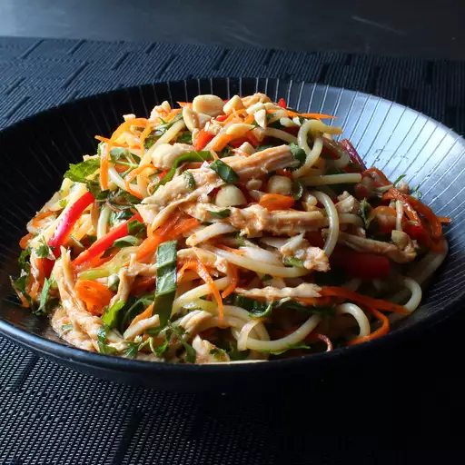

Chicken Noodle Salad

Details
Get ready to make all sorts of friends when you bring a big bowl of this Asian chicken noodle salad to the next big
cookout. The only folks you might scare away are the ones who brought regular pasta salads. There's just something
delightfully addictive about this special combination of cold and spicy. This recipe is the perfect catchall for all
those summer vegetables we're supposed to be eating more of, as well as any dry leftover chicken you have around.
Ingredients
- 3 cloves garlic
- half cup seasoned rice vinegar
- a tablespoon of soy sauce
- a tablespoon of fish sauce
- a tablespoon of brown sugar
- a tablespoon of siracha
- cooked chicken breast
- salad
Steps
- Whisk garlic, rice vinegar, fish sauce, brown sugar, and the other stuff in a mixing bowl
- tear chicken apart like spaghetti and put it in the fridge
- light salt water and boil the spaghetti until it's tender but firm
- put spaghetti in mixing bowl, and add the chicken and salad
- add everything in a bowl and mix